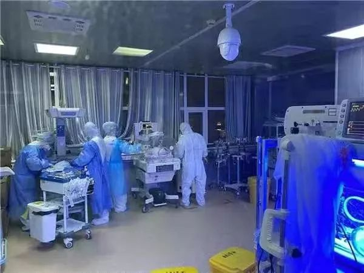
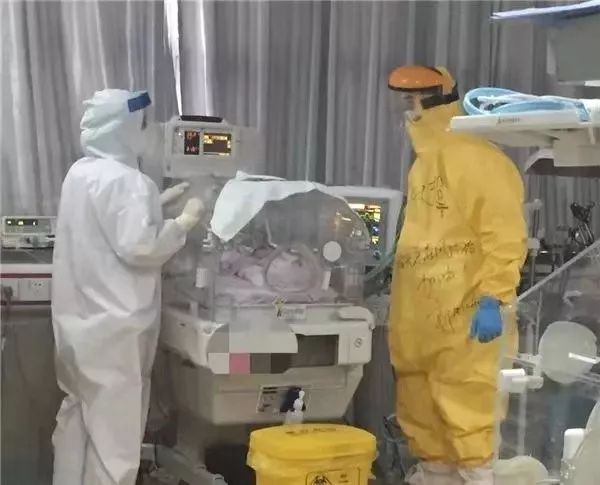
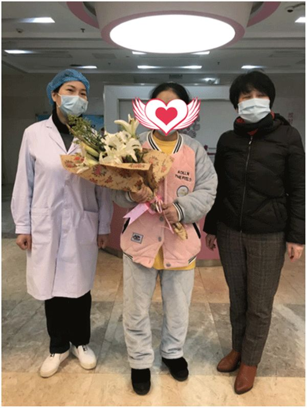

*****
***** *****
*****新冠肺炎治愈者：经历生死后，更热爱生活
原文链接 备份链接 澎湃新闻记者 朱莹 钟笑玫 明鹊 实习生 刘昱秀 李振东与病魔斗争了16天后终于治愈出院，他希望自己的经验能给病友提供借鉴。记者：闫海龙 魏凡 编辑：曾怡文 视频来源：澎湃新闻(04:53) 这个冬天，新冠肺炎疾风般席 …
***** *****
*****
*****2月12日，距离柯亮生下孩子已半个月。**********她仍旧需要与初生的小女儿保持距离，没有哺乳与接触。**********先生和公婆也无法近身照顾她太多，更多的时候，她和家人各自待在自己的房间，最近的距离是彼此的房门口。*****

柯亮的宝宝在新生儿科的隔离病区。受访者供图
文 | 新京报记者 杜雯雯 沈彤
编辑｜陈晓舒 校对 | 李项玲
►本文约2914字，阅读全文约需6分钟
这是29岁的柯亮第二次当妈妈。
一周之前，她从湖北黄石市妇幼保健院出院。除了“二胎妈妈”，她还带着一个特殊的身份：黄石首例被确诊感染新冠肺炎的孕产妇。
面对新冠病毒的“袭击”，柯亮也说不清，到底是年轻的身体帮了她，还是凭借母爱扛了过来。总之，她得到了所有人期盼的结局：治愈归家，母女平安。
“应该不是那个病吧”

2月12日，距离柯亮生下孩子已半个月。她仍旧需要与初生的小女儿保持距离，没有哺乳与接触。先生和公婆也无法近身照顾她太多，更多的时候，她和家人各自待在自己的房间，最近的距离是彼此的房门口。
不过至今她也无法确认，自己是在何时、何地被感染了新冠病毒。
从2019年春季得知怀了二胎后，她便定期前往黄石市中医院产检，一直以来各项指标都很正常。
如果顺利的话，孩子将在2月15日左右出生。但新冠肺炎疫情打乱了一切。2020年1月，在疫情蔓延时，柯亮正处于行动不便的孕晚期。
大多数时间，她都宅居在黄石市区的家中，少有的几次外出，是给即将出生的孩子添置生活用品。最远的距离是前往阳新县韦源口镇的娘家。
黄石距离武汉近百公里，柯亮只在新闻上关注过疫情，她没听说过亲朋中有人染病，也没有从武汉前来的朋友，这让她放松了警惕。在母婴店、超市、搭乘公交车或出租车时，她几乎没有佩戴过口罩防护。
2020年1月20日左右，丈夫有些发热不适，后来被证实是普通感冒，虚惊一场。但随后的几天里，柯亮也表现出类似感冒的症状，流鼻涕、打喷嚏，头也昏昏的。
1月29日凌晨，怀孕37周4天的柯亮腹部出现疼痛感，见红了。当天下午，她在丈夫的陪同下前往黄石市妇幼保健院产检，和往常的流程一样，胎心监护和腹部B超。
医生提示她：宝宝的脐血流值偏高，并安排柯亮吸氧，将数值降到正常范围。临走时，柯亮说自己好像感冒了，医生建议她到一楼内科再去看看。
一楼的护士帮她量了体温，温度计显示37.6℃，低烧。考虑到她的孕妇身份，发热门诊的大夫谨慎地向她告知了此时CT的风险：不排除CT或许对宝宝有影响，但如果不做，无法观察到肺部感染的情况，一旦延误恶化，结果更糟。
在CT室外等待结果的那一小时里，柯亮心里没底，“应该不是那个病吧。”
直到拿到CT检查报告单和血项检查结果，她才发现情况不妙：左侧肺部感染，白细胞异常，血氧浓度也偏低。
当天柯亮就被作为高度疑似病人收入隔离病区住院，同时被提取咽拭子样本，等待核酸试剂盒的检测结果。
事后，她尝试回忆自己过去一整月的行程，只有一次她不太确定：1月23日的夜间七点多，她叫了一辆的士，带着两岁多的大儿子从娘家赶回市区，车程不到一小时。中途，司机停了车，载上路边一位戴着口罩的男士。光线晕暗，柯亮瞟到男士手里夹着一个公文包钻进了副驾驶座。
她隐约听到司机询问对方是不是从武汉回来。那天下着小雨，车身晃荡一路向西开，柯亮有些晕车，没听清答案，只记得抱着儿子很快便睡着。
“孩子胎心有些快，大概170左右”
**
住进医院的第一晚，柯亮持续发烧，体温最高时达到38.5度。
黄石市妇幼保健院产科副主任 、隔离病房负责人王芬还记得这名特殊的产妇。“当时孩子胎心有些快，大概170左右，”王芬说，孕妇高烧，没有宫缩的临产征兆，他们担心胎儿在宫内缺氧，决定对柯亮立即进行剖宫产手术。
医生们还考虑到柯亮确诊感染了新冠肺炎，病情发展会很快，如果继续妊娠，可能会失去对孕妇的最佳救治期。
“通过剖宫产结束妊娠，孕妇转变为产妇，减少了胎儿对母体循环、呼吸各方面的负担，也有利于疾病的恢复。” 王芬说。
为保险起见，手术全程都是按照新冠肺炎确诊患者的规格来操作。进入感染间手术室的医护都做了严密的三级防护，术后也对手术室进行标准的清洗消毒。
头胎的顺产经验这回没能派上用场，迷糊中，柯亮只记得推进产房前签了很多字。这位没有经历过大型手术的年轻母亲很害怕，她担心孩子能否顺利出生，更害怕宝宝出生后也被病毒感染。
“像遭遇了一场重感冒”
**
手术顺利，1月30日零点10分，女儿出生，体重2900克。柯亮通过了第一道难关。
普通新生儿降生后的第一时刻，会被抱到母亲怀里。但柯亮的女儿出生后，立马被送往新生儿科病房隔离观察。

柯亮的女儿出生后，被送往新生儿科病房隔离观察。受访者供图
生下女儿的第二天，柯亮核酸检测试剂显示双标阳性，成为湖北黄石第一例被确诊感染新冠肺炎的孕产妇。截至2月12日下午，据黄石妇幼保健院医疗管理部门的数据，院内还有一名重症新冠肺炎产妇尚未出院。
柯亮得知自己确诊新冠肺炎后，怯怯问医生，“我会不会死？”
医生说，她的病情不算重，但不能排除会往严重的方向发展，目前没有特效药，除了给与相应的治疗，还需要病人保持好心态，主要还是得靠病人自身的免疫力。
隔离病房在2楼，十几平方米的活动范围。房间里有单独的洗手间，也有电视。但没有近亲在身旁。
最开始是麻药退去后的伤口痛，紧接着久躺之后的腰痛，之后便是胀奶的苦楚。柯亮下身插着尿管，吃喝拉撒都在床上， 护士随叫随到，但她不想次次都去麻烦别人，尝试着自己尽力去做一些事，光是从病床到卫生间的短短几步，都变得异常艰难，“像搬东西一样，一点一点挪动。”
挤出的乳汁只能倒掉，为了避免持续堵奶，她不得不求助医生，用回奶药终止了泌乳。
新冠肺炎也对她身体带来影响，胸闷、喉咙剧痛，山根处有针扎感。最难受的那两天，柯亮吃不下饭也起不来床，只能躺着闭眼，强迫自己平静。
她遵医嘱一天三顿按时服药，盐酸阿比朵尔、连花清瘟胶囊等。
或许是因为年轻，身体抵抗力不错，柯亮渐渐好转，看起来像是遭遇了一场重感冒。她还得到了另一个好消息，女儿出生后，两次核酸检测结果均为阴性，状态良好，已于2月5日出院。
住院期间，柯亮前后共进行了四次核酸试剂盒检测，除了确诊那次，后面三次的结果分别为：阳性、阴性、阴性，达到出院标准。
回家
**
母女分隔的这些天，柯亮只在手机上收到丈夫发来的女儿照片：裹着厚厚棉服和条纹包被，戴着粉色的帽子，高高的鼻梁很像她。丈夫给女儿取名为“知忆”，寓意知书达理、感恩心善。
她时常感到委屈，在病房里偷偷哭，与家人的每日电话或视频是她最快乐的时光。57岁的母亲想不到更好的安慰办法，只会不停在电话里告知她打听到的好消息——哪里又有了新的治愈者。
心里最没主意的时候，母亲甚至背着她去找所谓的风水先生给她“算命”，求得“女儿会平安痊愈”的消息才算心安。
在元宵节的前一天，柯亮回到家中。医生叮嘱她，不排除再次感染的可能，回家至少隔离半个月，才算脱离危险。

柯亮出院时的照片。受访者供图
全家人都配合着不见面的默契。两个孩子跟着爷爷奶奶一个房间，丈夫单独一个房间，柯亮一个房间。彼此最近的距离是在各自的房门口。
记者对柯亮的电话采访，只能在凌晨进行——要试图说服两岁的儿子去理解“暂时不要亲密接触回家的妈妈”实在太难。妈妈的声音只能出现在孩子熟睡后。
过去的两年时光里，她为了照顾家人，辞去工作成为全职妈妈。她的朋友圈记录着儿子成长日常：宝贝洗澡真开心呀，睡着的样子好迷人啊，走路跺脚的样子调皮又可爱。
柯亮调侃，“大难不死，必有后福“，说自己真切体会到了老生常谈的那句，“平淡是真，生命和健康最重要”。
一年前，她就曾在儿子的照片中敲下这句话：“宝贝你就是妈妈的动力，希望生活越来越好，事事顺心如意啊。”历经这次病痛，这位90后二胎母亲，把病愈后的人生规划定得更具体了些，“要出去工作赚钱，经济独立，给孩子更好的生活。”
联系作者
▼

杜雯雯
*E-mail：13671182322@163.com*

沈彤
*E-mail**：*876615882@qq.com
*洋葱话题*
*▼*
*你想为新生儿送上怎样的祝福？*
*后台回复关键词*****“洋葱君” ，加入读者群****
***推荐阅读***
对话武昌方舱医院医生：不久后，将有很大一部分患者治愈出院
鄂M卡车的归乡之路

*********既然在看，就点一下吧****** *********
*********
原文链接 备份链接 澎湃新闻记者 朱莹 钟笑玫 明鹊 实习生 刘昱秀 李振东与病魔斗争了16天后终于治愈出院，他希望自己的经验能给病友提供借鉴。记者：闫海龙 魏凡 编辑：曾怡文 视频来源：澎湃新闻(04:53) 这个冬天，新冠肺炎疾风般席 …
原文链接 备份链接 【财新网】（记者 宿慧娴 黄蕙昭）武汉大学中南医院最新论文显示，新冠抗疫过程中，院内感染应高度警惕。该院从1月1日至1月28日收治的138名新冠肺炎确诊患者中，约41.3%的患者属于院内感染，其中40人（29%）为医 …
原文链接 备份链接 【财新网】（记者 王和岩）疫情袭来已遍布全国各省份。在距离武汉最北的省份黑龙江，聚集性疫情成为防控重点。截至2月6日24时，各地共报告新型冠状病毒感染的肺炎聚集性疫情48起、发病194人，波及或暴露630人，死亡3 …
原文链接 备份链接 【财新网】（记者 张帆）2月3日，首都医科大学附属复兴医院心内科重症监护室出现聚集性病例，确诊9例，其中医护人员5例。北京第一时间披露了相关情况。西城区副区长缪剑虹介绍称，目前相关人员已经转到定点医院治疗，以轻症为 …
原文链接 备份链接 1月23日凌晨2点“交通封城”令公布时，张奇还在刷手机。 张奇是北京人。1月20日，他坐高铁到武汉来探望朋友。此前媒体已经零星有了关于武汉新冠肺炎的报道，而病例数据在20日急速增加了2倍，危重患者已经有44人。不 …